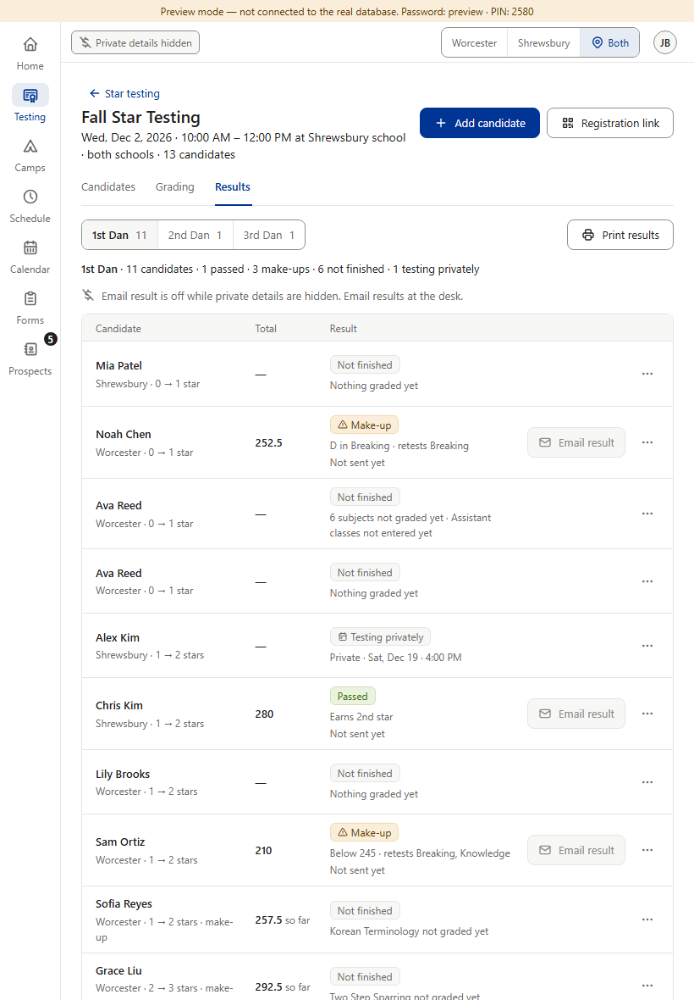
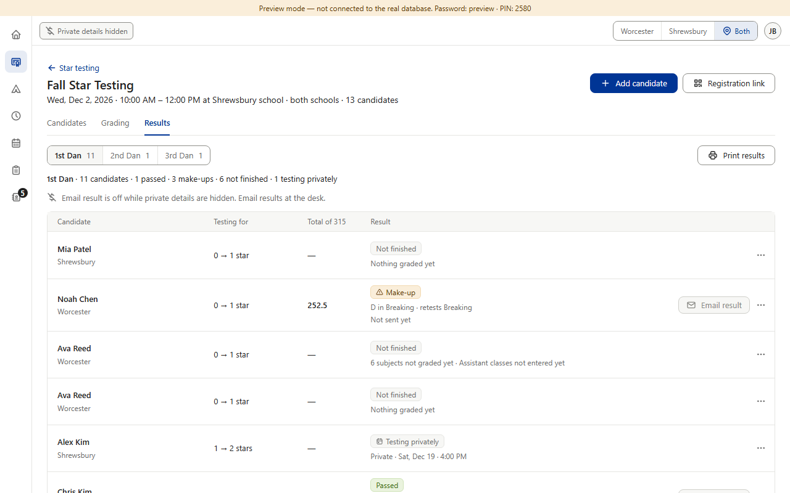
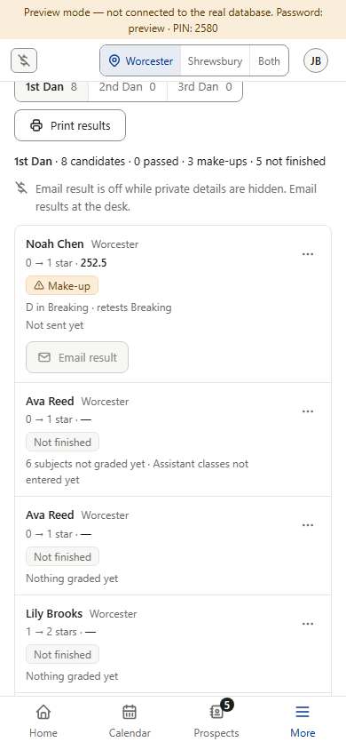
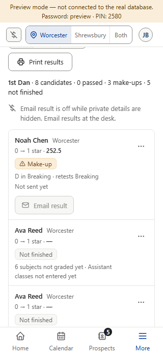

Today


After



A screenshot can’t show the mouse pointer or what a screen reader says; both were checked on the drawn page: cursor “not-allowed”, aria-describedby → the line. In the build, aria-describedby points at the line only while private details are hidden — not while the button is only busy (reading the family’s address), because the line isn’t on the page then. With the switch off, Email result looks and works as today. Black Belt copies this in its own Part 2.